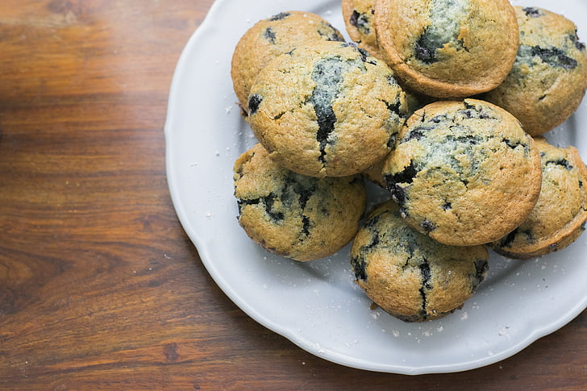

Blueberry Muffins

Description
Enjoy this fruitful, sweet, breakfast desert recipe to start off your mornings
Ingredients
Muffins:
- All-purpose flour
- White sugar
- Baking powder
- Salt
- Vegetable oil
- One egg
- Fresh blueberries
Topping:
- White sugar
- All-purpose flour
- Butter
- Cinnamon
Directions
- Mix dry ingredients in one bowl.
- Mix wet ingredients in a liquid measuring cup.
- Add wet mixture to dry mixture, then fold in blueberries.
- Make the topping.
- Pour the batter into a prepared muffin tin and sprinkle with the topping.
- Bake the preheated oven until the toothpick comes out clean.
Recipe Source
allrecipes: To Die For Blueberry Muffins